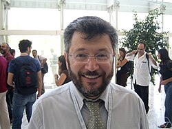
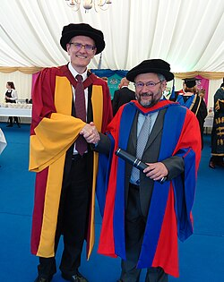

Efim Zelmanov | |
|---|---|
| Ефим Зельманов | |
 Efim Zelmanov | |
| Born | Efim Isaakovich Zelmanov September 7, 1955 |
| Alma mater | Novosibirsk State University Leningrad State University |
| Known for | Nonassociative algebra |
| Awards | Fields Medal (1994) |
| Scientific career | |
| Fields | Mathematics |
| Institutions | University of Wisconsin–Madison University of Chicago Yale University University of California, San Diego Southern University of Science and Technology |
Doctoral students | |
Efim Isaakovich Zelmanov (Russian: Ефи́м Исаа́кович Зе́льманов; born 7 September 1955) is a Russian-American[1] mathematician, known for his work on combinatorial problems in nonassociative algebra and group theory, including his solution of the restricted Burnside problem. He was awarded a Fields Medal at the International Congress of Mathematicians in Zürich in 1994.
Zelmanov was born on 7 September 1955 into a Jewish family in Khabarovsk. He entered Novosibirsk State University in 1972, when he was 17 years old.[2] He obtained a doctoral degree at Novosibirsk State University in 1980, and a higher degree at Leningrad State University in 1985. He had a position in Novosibirsk until 1987, when he left the Soviet Union.

In 1990, he moved to the United States, becoming a professor at the University of Wisconsin–Madison. He was at the University of Chicago in 1994/5, then at Yale University. In 1996, he became a Distinguished Professor at the Korea Institute for Advanced Study and in 2002, he became a professor at the University of California, San Diego.[3] In 2011 he got hon DSc from QUB (Belfast)[4]
In 2022, he moved to the People's Republic of China and joined the Southern University of Science and Technology in Shenzhen, China.[5][6] He served as a chair professor and the scientific director of the SUSTech International Center for Mathematics.
Zelmanov was elected a member of the U.S. National Academy of Sciences in 2001,[7] becoming, at the age of 47, the youngest member of the mathematics section of the academy.[8] He is also an elected member of the American Academy of Arts and Sciences (1996)[9] and a foreign member of the Korean Academy of Science and Technology and of the Spanish Royal Academy of Sciences.[10] In 2012, he became a fellow of the American Mathematical Society.[11]
Zelmanov gave invited talks at the International Congress of Mathematicians in Warsaw (1983), Kyoto (1990) and Zurich (1994).[12] He delivered the 2004 Turán Memorial Lectures.[13] He was awarded Honorary Doctor degrees from the University of Hagen, Germany (1997),[14] the University of Alberta, Canada (2011),[15] Taras Shevchenko National University of Kyiv, Ukraine (2012),[16] the Universidad Internacional Menéndez Pelayo in Santander, Spain (2015),[17] the University of Lincoln, UK (2016),[18][19] and the Vrije Universiteit Brussel, Belgium (2023).[20]
Zelmanov's early work was on Jordan algebras in the case of infinite dimensions. He was able to show that Glennie's identity in a certain sense generates all identities that hold. He then showed that the Engel identity for Lie algebras implies nilpotence, in the case of infinite dimensions.
{{cite web}}: CS1 maint: deprecated archival service (link)
{kind=link}
{kind=link}